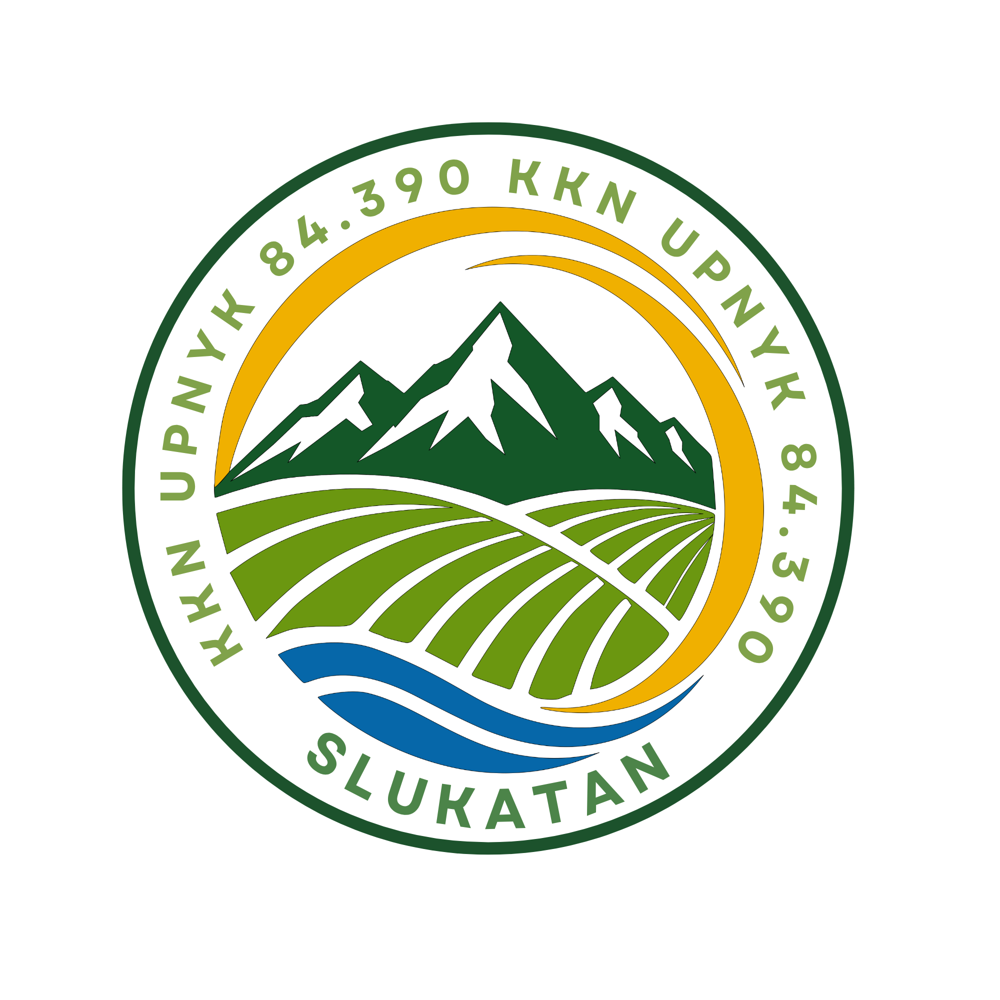

Kelompok KKN 84.390 UPN "Veteran" Yogyakarta melaksanakan pengabdian masyarakat di Dusun Slukatan melalui berbagai program kerja yang berfokus pada pendidikan, kesehatan, ekonomi, dan lingkungan.

Program kerja KKN disusun berdasarkan hasil observasi lapangan serta kebutuhan masyarakat Dusun Slukatan.
Bimbingan belajar, Kampanye Komunikasi Positif, Kampanye Anti Bullying, Cita - Cita, Website Desa, dan pemetaan Muka Air Tanah serta Kawasan Rawan Bencana.
Penyuluhan kesehatan, posyandu, Posbindu, Senam Bersama.
Gemar Menabung untuk anak-anak.
Kerja bakti, Kampanye Kebersihan Lingkungan, Sosialisasi Pengelolaan Sampah menjadi Pupuk. Pencegahan korosi alat pertanian.